k-Day 087｜被風困住
早上四點半感覺一直有東西在撞擊帳篷，想起今天會刮大風，爬出帳篷外，將昨晚胡亂插在地上的地釘重新找了好位置，用腳嚴實地踩進地裡。天空呈現灰色。
煮了一碗泡麵，泡上熱咖啡，坐在凹凸不平的睡墊上吃了起來。昨晚實在太隨便，沒有踢開帳篷下的大石頭，導致整晚身體都在遷就這些石塊，呈現扭曲的睡姿。
實在沒有這麼早出發的理由，設定了早上八點的鬧鐘，塞上耳塞，倒頭繼續睡回籠覺。
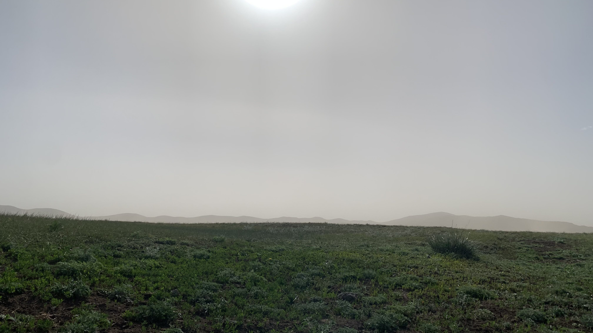
九點起床坐在帳篷裡整理行李，換掉發臭的衣物，剪了骯髒的流浪漢指甲，轉開保溫瓶蓋喝起咖啡。實在不是我個性拖延，剛才睡覺時風吹得帳篷一直搧我巴掌。既然從早上開始風就這麼大，也沒必要摸黑貪早地出發。
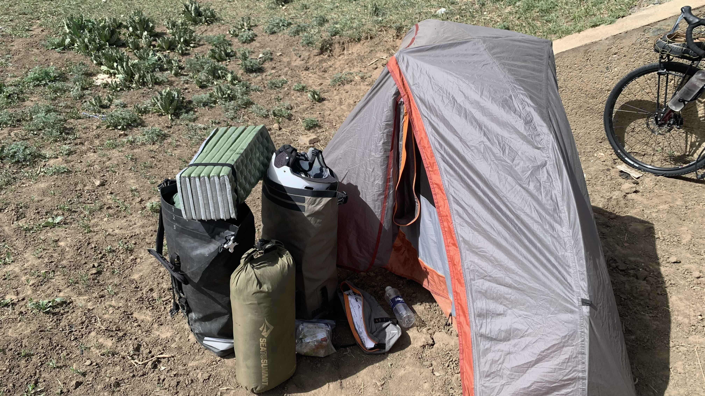
直到十點帳篷開始發熱，不甘不願地開始收拾。裝備越來越多，主要是保暖衣物都收到裡面的緣故。
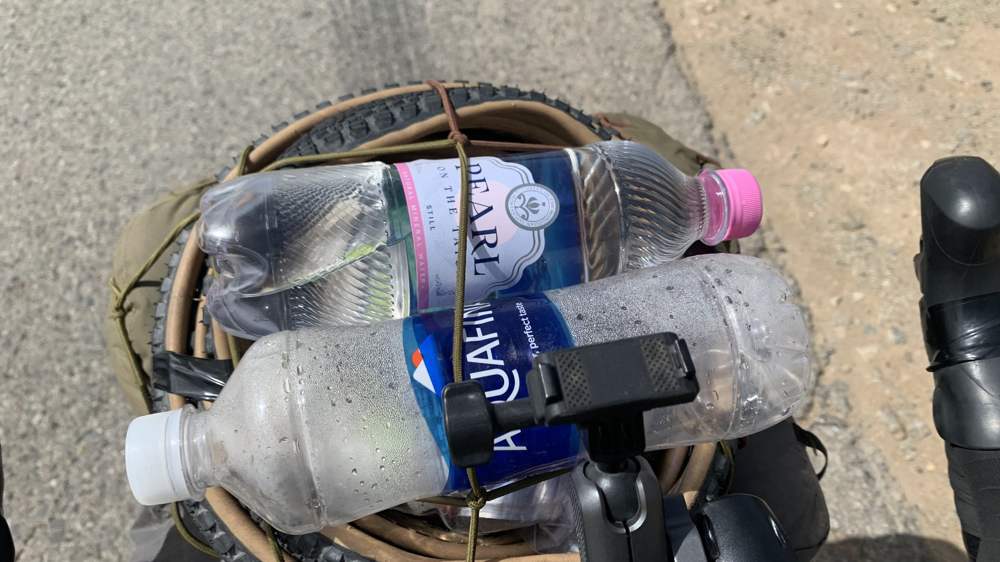
剛出發就收穫一瓶水，依然是白車，接過水後對方喊了一句：「take care!」就帥氣開上陡坡。
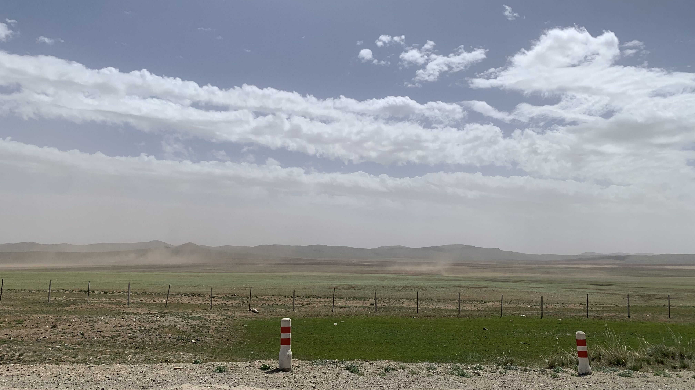
騎了幾公里被風吹得餓了，坐在此處吃點零食，欣賞遠處黃沙走路的景色。
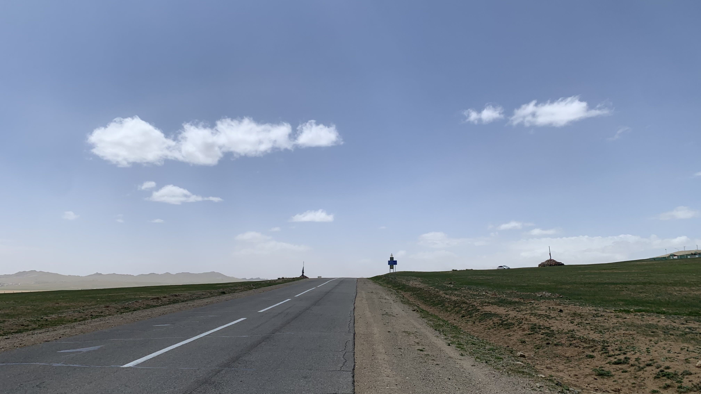
山頂有兩座敖包，意味著將迎來短暫地下坡，以及另一座上坡。
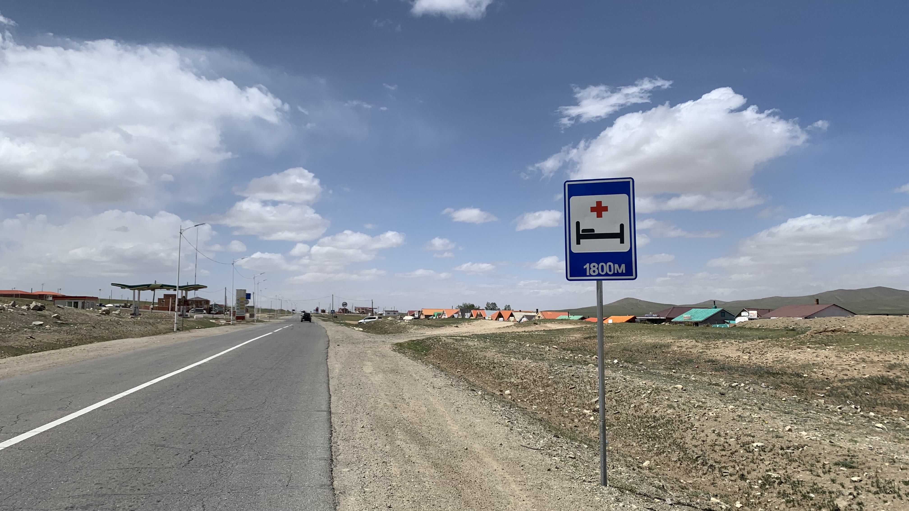
約莫15公里左右，出現一點人煙。
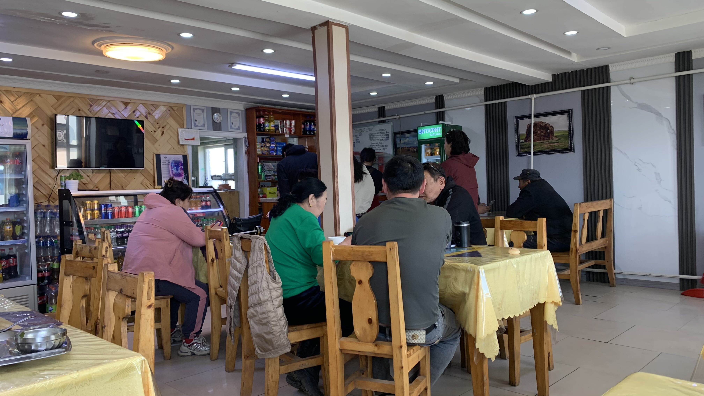
挑選了一家門口車最多的餐廳，內裝很有在地氛圍，菜單上也都是明碼標價的。
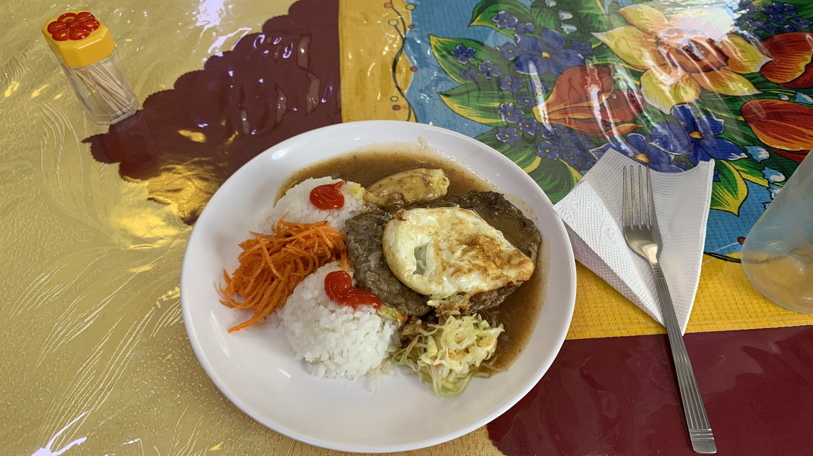
點了一盤牛絞肉排加蛋，為下午的大風儲備體力。
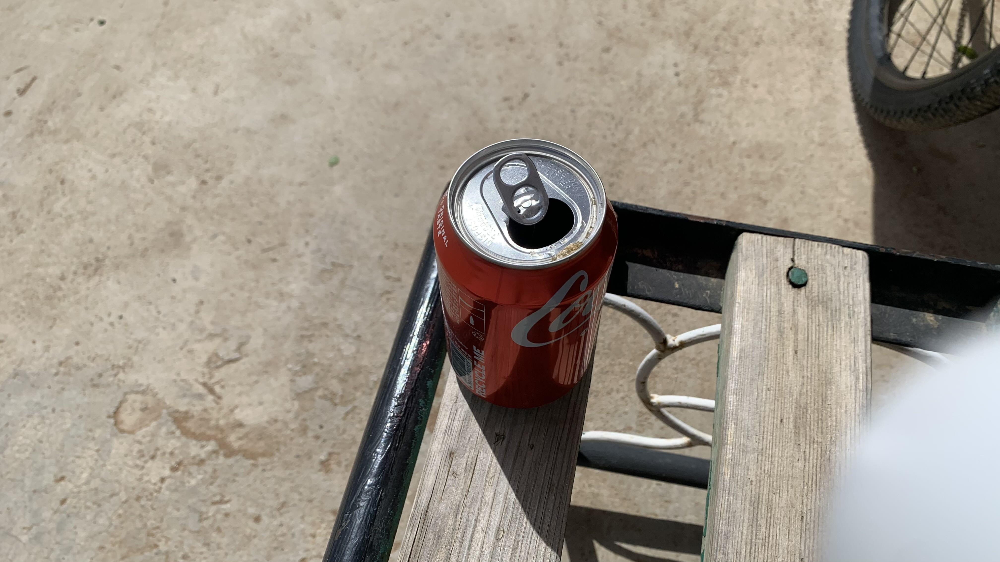
吃飽後走到門口，大晴天的，沙塵竟然遮住陽光，風大到連牛群都躲在加油站。
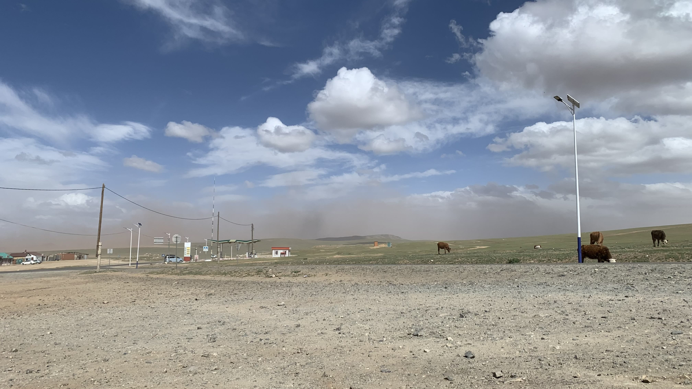
向當地生物學習是必要的，我也買瓶可樂坐在門口等風過。坐了一個半小時，可樂和嘴裡都是滿滿的沙粒口感，決定起身走到對面超商補貨。
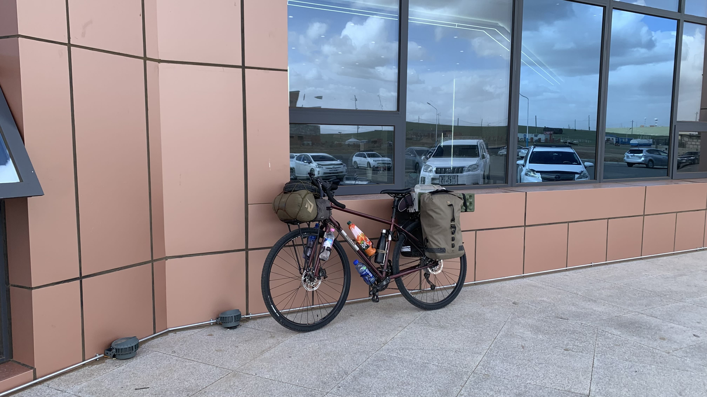
沒想到買個衛生紙出來，路燈都在搖晃，連推車都推不動。躲在超商牆邊擋風，風沙依然繞過牆體掃到臉上。已經在這裡坐了兩小時，究竟該怎麼辦才好呢？
既然踩不動，推車下山總可以吧！走了300公尺，斷然躲到另一間顯然是新落成的大型休息站後，將二十三號靠在背風的牆上。再往前就是18公里的下坡，但這風速會把我吹去撞車，或者直接送我單程票直達山谷底端。
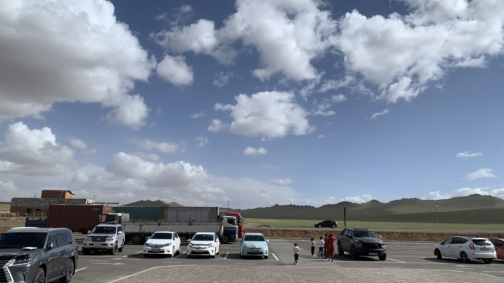
如果風不大的話一小時就能滑下山了，實在不必貪圖這種里程數。先在這坐著吧，等五六點如果風還很大就在附近紮營。
坐在牆角邊，又想起在Mobicom看到的那位年長女性。那種沉澱至靜止的動態，是多久的時間習慣了等待之後才塑造出來的呢？此刻的我不過是在風中坐了幾小時，就開始毛躁地挖背包裡的零食飲料，滑手機、漫無目的地四處張望，站起來晃蕩。
城市裡的人身影是晃蕩的，在烏蘭巴托見過他和現場排隊等叫號的民眾後有了更深刻的觀察。中午吃飯時來了兩位年輕人，擺盪的四肢，不穩固的脖頸連接著的腦袋，拖沓的、破碎的步伐，還有耳朵上的AirPod，立刻就和其他人產生區別。
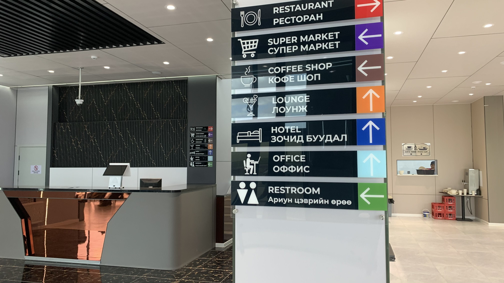
此處的人衣著相當講究，穿著傳統服飾的人不少，搭配的耳環、提包也都是材質優良造型精緻的產品。曾經考慮過買件蒙古袍騎車，可惜腦中立刻浮現長袍下擺捲進鏈條的畫面。
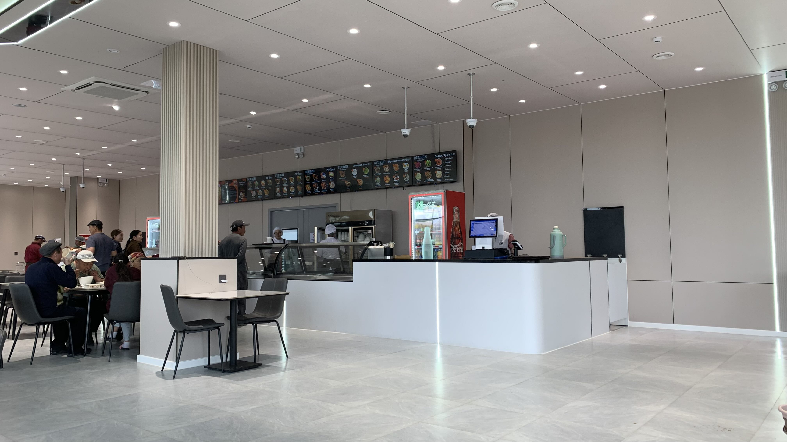
就快五點了，仍然推不動車，那就推門進餐廳吧。
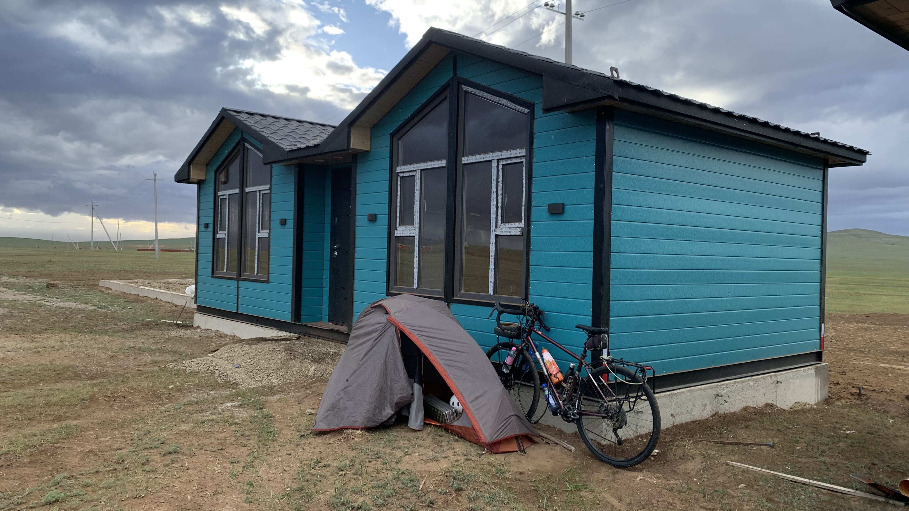
內裝相當高級，按照餐廳規模和對面正在興建的司機旅店，顯然此鎮已準備好迎接大批遊客。
買了一杯咖啡，坐在單人座位充電。看著窗外路人們的衣服飛動的樣子，今晚就住在這裡了。
走到門口發現已經下起大雨，跟二十三號一起躲在屋檐下。突然出來一群人，其中一位站在二十三號旁邊，開始捏捏煞車，轉轉運動相機的旋鈕，對我比了個讚。他們之中的一位女性，也就是上方照片穿著紅色長袍的女性突然用英語問我從哪裡騎過來，我說從日本要到法國。
他很開心地說他兒子曾在日本待了四年，於是找來兒子詢問我路線，再轉譯給家人們，就這樣整個家族為了一個圓圈。紅袍女性介紹身邊另一位同樣造型精緻的年長女性說：「這是我的媽媽。」於是我用蒙語打了招呼。觀察兩位女性和其他人交談時的舉止，不是簡單的家庭啊。
整個家族離去後，突然有個人用日語和我打招呼，原來是此處的員工。機不可失馬上詢問可否讓我在附近紮營。他指了旁邊的空地說那裡可以，於是牽著二十三號往空地走。
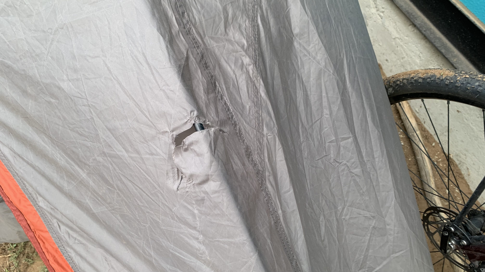
說日文的員工又跑出來，帶著我到空地旁的小屋。今日風實在太大，於是帳篷就搭在門口背風處。離開前說今晚會下雨，要是有什麼問題再去找他。

就在以為今天也將開心結束，準備拍照收工的瞬間，一陣風把車吹倒。二十三號的煞車把手劃破外帳，露出一個大口。拉起車查看帳篷結構，骨架似乎還安好，這可是我的家啊。

用電火布和貼傷口的敷料貼著，邊緣很快就脫落。將內側也貼上電火布，貼到一半開始下起大雨。就這樣吧，此刻這種天氣要是把最後一片珍貴的睡墊補片貼上也只是浪費。
穿上毛衣和羽絨服，換上乾爽的氂牛襪，幫睡袋套上露宿袋，鑽進睡袋閉上眼睛。沒事的，不過是旅行的小插曲罷了。
今日花費： 午餐 18000、水＋可樂＋辛拉麵 12500、濕紙巾＋衛生紙＋綜合堅果＋咖啡＋蘿蔔汁 26800、咖啡 8700元